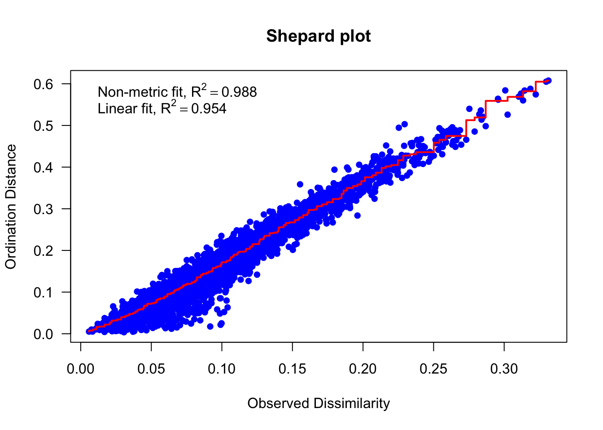

7 Multivariate analysis
7.1 Introduction to multivariate analysis
In previous sections, we have discussed scenarios where there is one response variable. If we have multiple responses, \(y_1\)…\(y_n\), and multiple predictors, \(x_1\)…\(x_n\), then we need multivariate approaches.
These methods allow us to represent the variables or observations in a lower-dimensional space, such as a two-dimensional or three-dimensional plot, while preserving the overall structure of the data.
OUTLINE: “Large zooplankton such as Daphnia, large copepods or predatory Cladocera (Bythotrephes, Cercopagis, Leptodora) are much better prey for forage fishes, so changes in their populations (or shifting drivers) are of particular interest.”
Question: What are the major drivers of Diaphnia biomass?
Variables: Daphnia biomass (mg/m3), water column temperature (°C), epilimnion temperature(°C), particulate organic nitrogen (mg/L), dissolved inorganic carbon (mg/L), particulate organic carbon (mg/L)
A good practice before running any analysis is to subset a new dataframe which contains the variables we are interested in.
## Select the variables interested
ham.multi <- ham[, c("area_group", "season", "Station_Acronym",
"Daphnia", "watercolumn_temp", "mean_mixing_depth_temp",
"PON_ECCC1m", "DIC_ECCC1m", "POC_ECCC1m")]
## Remove all rows containing NAs
ham.multi <- na.omit(ham.multi)
## Rename the columns
colnames(ham.multi) <- c("area", "season", "station", "daphnia",
"column.temp", "epili.temp", "pon", "dic", "poc")In our new dataframe, different seasons are represented by numeric numbers from 1 to 5. We would like to re-code them into string factors, for easier visualization in later graphics. There are many ways to do this, here we introduce using the factor() function.
## Recode the season numeric code into factors
table(ham.multi$season)
1 2 3 4
57 113 118 40 ham.multi$season <- factor(ham.multi$season, levels = c(1, 2,
3, 4), labels = c("spring", "early summer", "late summer",
"early fall"))7.2 Principle Component Analysis (PCA)
Principle component analysis is a linear transformation method that converts the original set of variables into a new set of linearly uncorrelated variables, called principal components (PCs), which are sorted in decreasing order of variance.
7.2.1 Correlation examination
First of all, we need to examine the correlation between our variables. We can achieve this by running a correlation test using cor() function, or creating a correlation plot using pairs() function.
## Correlation table
cor.df <- cor(ham.multi[4:9])
knitr::kable(cor.df)| daphnia | column.temp | epili.temp | pon | dic | poc | |
|---|---|---|---|---|---|---|
| daphnia | 1.0000000 | 0.2293285 | 0.3230253 | 0.1233690 | -0.1169047 | 0.1437126 |
| column.temp | 0.2293285 | 1.0000000 | 0.8167008 | 0.3083830 | -0.4815168 | 0.3670961 |
| epili.temp | 0.3230253 | 0.8167008 | 1.0000000 | 0.3098929 | -0.5021353 | 0.3857810 |
| pon | 0.1233690 | 0.3083830 | 0.3098929 | 1.0000000 | -0.2834075 | 0.9459712 |
| dic | -0.1169047 | -0.4815168 | -0.5021353 | -0.2834075 | 1.0000000 | -0.3846432 |
| poc | 0.1437126 | 0.3670961 | 0.3857810 | 0.9459712 | -0.3846432 | 1.0000000 |
## Correlation plot
pairs(ham.multi[4:8], main = "Ham Data", pch = as.numeric(ham.multi$season),
col = (ham.multi$season))
# colored depending on seasonDimension reduction techniques such PCA works the best when variables are strongly correlated with each other. From the above correlation test output and plot, we can see that some variables clearly have a linear relationship, such as water column temperature and epilimnion temperature, or water column temperature and dissolved inorganic carbon.
7.2.2 PCA with standardized data
Now we can start with running our principle component analyses. PCA can be computed using various functions in R, such as prcomp() in stats package, princomp() in stats package, rda() in vegan package.
Important Note: The rda() function in vegan allows users to conduct both PCA and RDA, depending on whether the data is constrained or not. When it is unconstrained (like in our example), it is running a PCA!
Here we demonstrate using the vegan package, since it also allows easy visualization of our results. Keep in mind that we need to run the PCA on all columns containing continuous variables, which is column 4 - 9 in the ham.multi dataframe.
## Run PCA analysis
pca.ham <- rda(ham.multi[, 4:9], scale = TRUE) #subset for all continuous variablesAfter completing the dimension reduction process, each sample now appears as a point in space specified by its new position along the principle component axes. There coordinates are referred to as “site scores” in rda() results, and we can access such information with the scores() function.
scores(pca.ham, display = "sites")Meanwhile, our original variables are projected on the the new principle components. They are defined as “Loadings” and are referred to as “species scores” in rda() results. This information can be obtained with the scores() function too.
scores(pca.ham, display = "species")Remember:
“Sites” refer to your observations (the rows in your dataset).
“Species” refer to your descriptors (the columns in your dataset), which are the different environmental variables.
7.2.3 Screeplot
Now, let’s determine how many principle components to retain for further analysis. The screeplot() function allows us to visualize the variance explained by each of the principle components. Ideally, a curve should be steep, and then bend at an “elbow”, after which the curve flattens out. The first few principle components usually account for a large portion of the variance in the data, and should be retained.
## Screeplot
screeplot(pca.ham, type = ("lines"), main = "Screeplot", pch = 16,
cex = 1)Meanwhile, we can also look at the proportional variance explained by each principle component. Such information is available in the summary() of our PCA results. We see the first two PCs together explain roughly 72% of the total variance in this dataset. Along with the screeplot, we are confident that the first two PC are sufficient enough to represent our data.
For easier usage in future, let’s store them in a list:
pvar <- c(50.22, 21.43)
pvar[1] 50.22 21.437.2.4 Plot ordination for PCA
After we have chosen the first two principle components, now let’s start visualizing our multidimensional data in a 2-dimensional space.
As we have seen in previous materials, there are many different methods/packages for creating plots in R. Some of these resources are listed in the “Other Resources” section at the end if you are interested. For this tutorial, we demonstrate using the vegan package to visualize our multivariate results.
In general, plotting ordination with vegan follows two steps:
Use
ordiplot()to create an empty canvas (You can specify the title, axes, limits, and many other features during this step).Use
points()to add points representing samples or variables in the new dimensions. Usetext()to add labels.
Plot 1 - Site Plot (samples)
we can visualize the positions of our samples on the new axes (PC1 and PC2). This is the “site plot”.
# Create a blank plot
ordiplot(pca.ham, type = "n", main = "Individuals ('sites')",
xlab = paste0("PC1 (", pvar[1], "%)"), ylab = paste0("PC2 (",
pvar[2], "%)"), ylim = c(-1.2, 1.2))
# Use points() to add points
points(pca.ham, display = "sites", cex = 1) # add sitesWhat if we are interested in the seasonal patterns of our samples on the reduced dimensions? We can use the same graphing techniques, but group our dataset using different seasons. Make sure to label your seasons in the “legend”.
## Create an empty canvas
ordiplot(pca.ham, type = "n", main = "Individuals ('sites') by season",
xlab = paste0("PC1 (", pvar[1], "%)"), ylab = paste0("PC2 (",
pvar[2], "%)"), ylim = c(-1.2, 1.2)) # specify the y-axis limits
## Use points() to add points
points(pca.ham, display = "sites", pch = as.numeric(ham.multi$season) +
14, col = c(2, 3, 4, 5)[as.numeric(ham.multi$season)], cex = 1) # add sites
## Add legends
legend("bottomright", legend = unique(ham.multi$season), pch = as.numeric(ham.multi$season) +
14, col = c(2, 3, 4, 5), bty = "n") # bty specifys legend box boarder
There are many other functions in the vegan package that allows customization of your ordination plots. For example, ordiellipse(pca.ham, display="sites", conf=0.95, kind="sd", groups=ham.multi$season) function allows us to add 95% confidence intervals to each group of samples.
Try it now:
Let’s try creating a sites plot for the same multivariate dataset, but color samples based on different “area_group”. Use colors of your own choice!
## Create an empty canvas
ordiplot()
## Use points() to add points and add legends
points()
legend()Plot 2 - Biplot (samples and variables)
Finally, we can visualize both “sites” (individual observations) and “species” (variables) on one graph with a biplot. This time, we use the biplot() function in base R to do this.
## Biplot for PCA
biplot(pca.ham, display = c("sites", "species"), type = c("text",
"points"), main = "Biplot", xlab = paste0("PC1 (", pvar[1],
"%)"), ylab = paste0("PC2 (", pvar[2], "%)"))Some important points for the biplot() function:
biplot()allows different scaling options to preserve either the Euclidean distance (in multidimensional space) among objects (sites), or the correlations/covariances between variables (species). To learn more, please refer to the function description or these online tutorials: QCBS workshop - Unconstrained Ordination Scaling; Tutorial 14.2 - Principle Component Analysis (PCA).biplot()can also be used to show only the samples or variables, by settingdisplay = "sites"ordisplay = "species". However, it does not allow us to visualize samples in different groups. This is why we introduce the slightly more complicatedordiplot()method in the previous sections.
7.3 Non-metric multidimensional scaling (nMDS)
The produced biplot in PCA represents well the distance among objects, but fails to represent the whole variation dimensions of the ordination space. Unlike PCA, non-metric multidimensional scaling (nMDS) does not to preserve the exact dissimilarities (distance) among objects in an ordination plot, instead it represents as well as possible the ordering relationships among objects in a small and specified number of axes.
In other words, the goal of nMDS is to represent the original position of samples in multidimensional space as accurately as possible using a reduced number of dimensions.
We can use the metaMDS() function in the vegan package to conduct non-metric multidimensional scaling in R. In addition to the input dataframe, this function also requires us to specify the distance measure distance = ? and number of reduced dimensions k = ?.
## Run nMDS
nmds.ham <- metaMDS(ham.multi[, 4:9], distance = "bray", k = 2,
trace = FALSE)
## Stress
nmds.ham$stress[1] 0.136086From the nMDS results, we can extract the stress parameter. Stress identifies how well points fit within the specified number of dimensions.
A good rule of thumb for stress:
- \(>0.2\) Poor (risk in interpretation)
- \(0.1-0.2\) Fair (some distances misleading)
- \(0.05-0.1\) Good (inferences confident)
- \(<0.05\) Excellent representation
7.3.1 Shepard Plot
We can use a Shepard plot to learn about the distortion of representation. On the x-axis, it plots the original dissimilarity (original distances in full dimensions). On the y-axis, it plots the distances in the reduced dimensional space. Ideally, a really accurate dimension reduction will produce a straight line.
## Shepard plot
stressplot(nmds.ham, pch = 16, las = 1, main = "Shepard plot")7.3.2 Plot ordination for nMDS
No we can plot the ordination for nMDS, just like for PCA in the previous sections. The steps exactly the same. We use ordiplot() to create an empty canvas first, then use points() to add samples/variables. Additionally, we would like to represent species scores with arrows. This step can only be done manually by extracted the species scores using scores(display = "species"), and draw arrows using arrows() function.
## Create empty canvas
ordiplot(nmds.ham, type = "n", main = "nMDS Ordination")
## Add points and legends
points(nmds.ham, display = "sites", pch = as.numeric(ham.multi$season) +
14, col = c(2, 3, 4, 5)[as.numeric(ham.multi$season)], cex = 1) # add sites
legend("bottomright", legend = unique(ham.multi$season), pch = as.numeric(unique(ham.multi$season)) +
14, col = c(2, 3, 4, 5), bty = "n", cex = 1) # add legend
## Add species scores manually
species_scores <- scores(nmds.ham, display = "species")
arrows(0, 0, species_scores[, 1], species_scores[, 2], col = "black",
length = 0.1) # draw arrow from (0,0)
text(species_scores[, 1], species_scores[, 2], labels = rownames(species_scores),
col = "black", pos = c(2, 2, 3, 4, 2, 3))
7.4 Other resources
Multivariate analyses tutorials
- Building Skills in Quantitative Biology
- QCBS R Workshop Series - Multivariate Analyses in R
- Running NMDS using ‘metaMDS’(nMDS tutorial with vegan package)
- Introduction to Ordination
Useful R packages